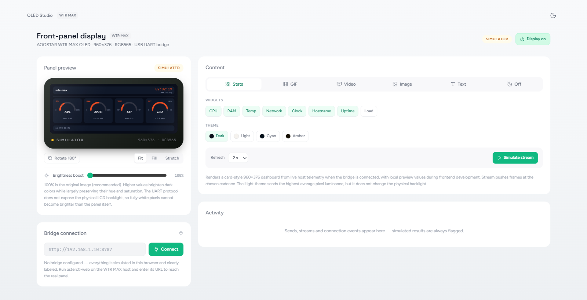
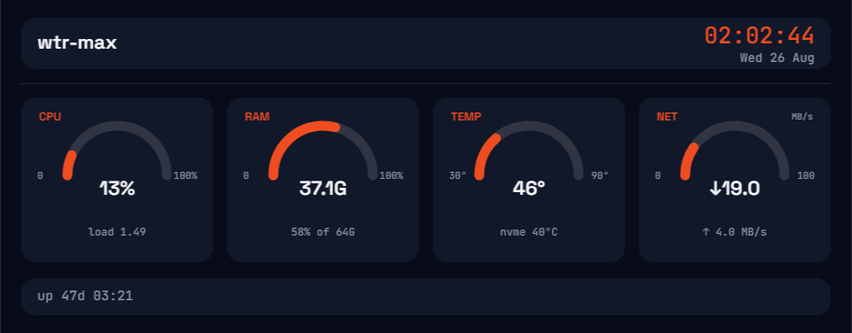

AOOSTAR / SELF-HOSTED DISPLAY CONTROL
웹에서 다루는
960×376
프론트 패널.
Proxmox에서 구동되는
WTR MAX 웹 컨트롤러
- HOST
- LINUX · PROXMOX
- LINK
- LAN · USB UART
- OUTPUT
- RGB565
CONTROL01

CONTROL → OUTPUT

NATIVE FRAME960 : 376
CASE 01 / DISPLAY CONTROL
AOOSTAR
OLED STUDIO
웹 컨트롤과 실제 패널 출력 사이의
전체 흐름을 하나의 서비스로 구성했습니다.
01RENDER PATH02
01 / WEB CONTROL
웹에서 설정하고,
패널 출력을 바로 확인.
Stats · GIF · Video · Image · Text · Off
실제 웹 UI · 시뮬레이터 상태
02 / NATIVE OUTPUT
작은 화면 안에서
필요한 정보만.
CPU · RAM · 온도 · 네트워크 · 시계 · 업타임
시뮬레이터 프레임 렌더
0960 PX960
RGB565376 PX2.55 : 1